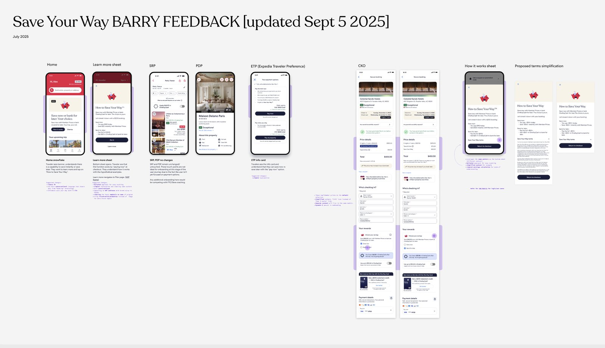
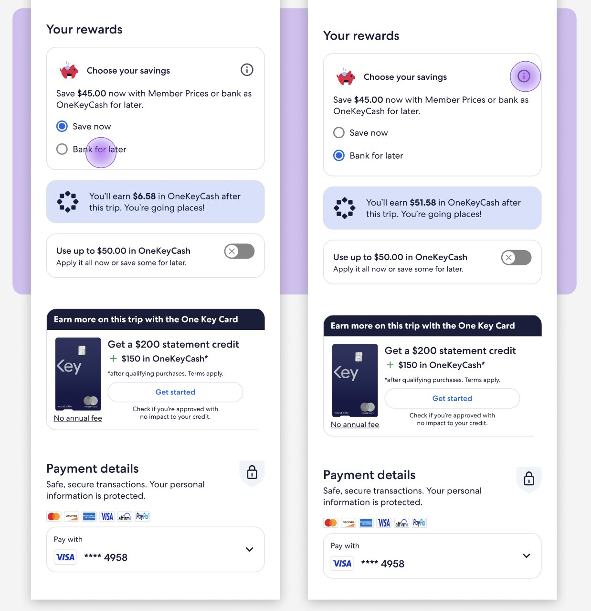
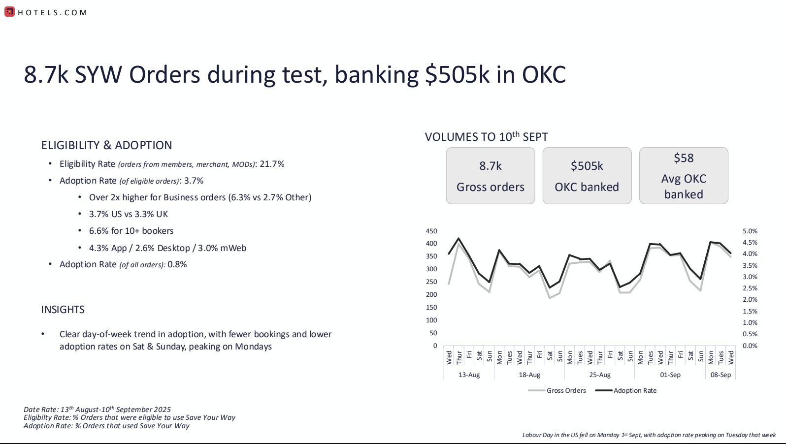

Save Your Way lets a Hotels.com member choose between a lower price now and banking that saving for a later trip. I led the design from discovery to launch.
My role
Lead Experience Designer. I was design lead on this project from discovery to launch, while setting direction across three other workstreams.
What I did myself
Discovery. The end-to-end experience. The way the feature explains itself, which is the choice, the "How it works" drawer and the worked examples. The grading system for design bugs.
What others owned
A content design lead worked with me on the words. Product owned the business case and scope. Engineering built it across web and the apps. An analytics team designed the test and wrote the readout. Marketing ran the launch campaign.
Status
It is still live and in use, and it is a unique feature in the market. I led the design for this workstream through to February 2026.
Platforms
Desktop, mobile web, tablet web, native iOS and native Android, in the US and UK.
Dates
A/B test from 13 August to 10 September 2025. Full rollout followed in October 2025.
The problem
Hotels.com members get lower member prices. On a work trip that lower price reduces a bill the employer pays, so the person who booked gets nothing from it. Save Your Way gives them a choice. They can take the member price now, or pay the standard price and bank the difference as OneKeyCash to spend on a later trip of their own.
The people it was built for book hotels for work, often for other people as well as themselves. Research going back years had shown these travel arrangers were among the most loyal Hotels.com customers. After the One Key loyalty programme launched, the business could see it was losing some of them, and Save Your Way was the big bet to bring them back.
On the surface this is a travel feature. Underneath, it is a money decision. Someone has to weigh a saving now against value later, and they have to do it in the middle of paying.
End-to-end flow, mobile

What made it hard
There was no equivalent anywhere in the industry, so there was no familiar pattern to borrow. We had to invent the explanation.
For most of the project we could not test the idea with the public. Marketing's view was that testing would give competitors time to react. That made most of the comprehension decisions a judgement call.
The launch date was fixed. Marketing had planned TV adverts, billboards and affiliate campaigns around it.
Engineering were reluctant to release something that customers might not understand, and that was a fair concern for a product nobody had seen before.
The first version was rejected
We took the experience to a sign-off review so that it could be built in time for the deadline. A senior product leader who had recently joined said they were not happy with it. They asked us to come back with a stronger experience, one that would give engineering the confidence to build it.
I reworked it around patterns that came from native apps first. The main one was a bottom drawer, which also worked on the web and was less disruptive for the new modules at the front of the funnel. The version that shipped was simpler than the one that was rejected.
Before and after the pivot
Image to addThe rejected version next to the version that shipped. Label rebuilds as rebuilds.
Decisions
A choice, not a setting
Considered
A toggle, like the one members already used to apply OneKeyCash at checkout.
Chose
Two clear options on the booking form. Take the saving now, or bank it for later.
Why
This is a trade-off, and I wanted people to make it on purpose. A toggle can be switched without the person noticing what they gave up.
15.4% of people who saw the choice interacted with it.
Booking form choice, iOS

Explain on demand
Considered
Explaining it inline on the booking form, or sending people to a separate page.
Chose
A "How it works" link that opens a bottom drawer.
Why
Most people do not need the explanation. The ones who do can get it without losing their place in the booking. The drawer went into the Expedia Group Design System and other teams reused it. It also solved a problem on the homepage, where banners for new features were being ignored and needed bespoke work each time.
5.1% opened the drawer, and 7.9% on mobile web.
How it works drawer, iOS
Image to addThe drawer open over the booking form.
Numbers that get more specific
Chose
Simple worked examples with easy figures early in the journey. At checkout, the figures for the booking the person is about to make.
Why
Early on, people need to understand the idea. At the point of deciding, they need to know what it means for this booking.
Copy, from early to checkout
Image to addThe same explanation at three points in the journey, showing how the numbers change.
The piggy bank
The gap
The name had been through several rounds of testing, but the visual language for the feature would not be ready in time.
Chose
In the design jams I ran, I proposed reusing a piggy bank icon that already existed in the design system. People in the US and UK, the two markets we were launching in, would recognise it at once.
The pushback
Some senior stakeholders worried about a pig representing the feature if it later expanded to markets such as the Middle East. A senior product leader felt it did not match the style of other feature icons. There was a push to change it to a luggage tag.
What I did
I got the piggy bank into one of the final rounds of user testing, and I fed into the study design so that it asked a question about how well people understood the icon. The research supported it. Around the same time the company's chairman, who had been reviewing the marketing, pushed for the phrase "bank it" to go back into the designs. The two together persuaded the stakeholders.
Result
The icon shipped after small changes from the design system and visual identity team. It is still in use and has become a large part of how the feature is branded.
Icon options
Image to addThe piggy bank and the luggage tag side by side.
A receipt that works for an expense claim
Chose
To design the post-booking receipt with as much care as the booking form.
Why
A business traveller has to claim the booking back. If the receipt does not clearly show what was paid, the feature fails for the people it was built for.
Receipt experience
Image to addReceipt designs and the prototype that was researched.
Design bugs graded like functional bugs
The pattern
On earlier launches, design bugs raised during acceptance testing were often downgraded as nice to have. Before the One Key card launch my team logged more than 150 of them and they were parked. Some came back later as calls to the contact centre, which are expensive.
What I did
On Save Your Way I argued for design bugs to sit in the same tables as functional bugs, with a priority rating. The programme manager asked me to write a grading system, because the ratings for functional bugs did not translate. I wrote one based on the likely effect of each kind of bug on the experience.
Result
It was used on the project. It then became the standard template for major Expedia Group projects.
Results
The rule that decided rollout was that the feature must not harm conversion. Adoption told us whether the idea worked. The guardrail metrics told us what it cost.
8,700orders used Save Your Way during the 28-day test
$505Kbanked as OneKeyCash, about $58 an order
−0.10%conversion, statistically inconclusive. The rule was met and it rolled out to everyone
3.7%of eligible orders used it. 21.7% of orders were eligible, so that is 0.8% of all orders
The segments say more than the headline. The people it was designed for used it most, and the native app led every other platform.
Adoption, as a share of eligible orders
Group
Adoption
Native app
4.3%
Mobile web
3.0%
Desktop
2.6%
Business trips
6.3%
Other trips
2.7%
Travellers with ten or more bookings in a year
6.6%
Test readout

What the test showed we got wrong
The homepage banner pushed sign-in down the page
Visitors signing in or signing up fell by 1.0%, and by 2.8% on mobile web. The Save Your Way banner sat above the One Key sign-in and pushed it below the fold on phones. The banner was replaced in a separate homepage test that launched on 22 September 2025.
Support contacts went up
Contacts rose by 2.2%. Save Your Way orders could not be changed online, so people had to call, and about 5% of the transcripts reviewed were about the feature. The team also believed some people were choosing to bank the saving by accident, because of where the option sat and how close it was to the usual OneKeyCash toggle.
Desktop conversion dipped
Desktop conversion was down by a significant 0.7%. The readout put this down to where the module sat on the homepage, and the follow-up homepage test addressed it.
One thing moved the right way without our planning it. Homepage bounce improved by 1.1%, and by 1.4% on mobile web.
What I would do differently
I would design the desktop experience earlier. Most travel arrangers book on desktop, and we treated it as an afterthought.
I would find a way to test with real users sooner. Recruiting through the employee network would have protected the secrecy that marketing needed.
I would solve the compressed checkout properly. The design we launched was heavily constrained there.
Figures are from the launch A/B readout for 13 August to 10 September 2025, Hotels.com US and UK, analysed by the Member Value analytics team.